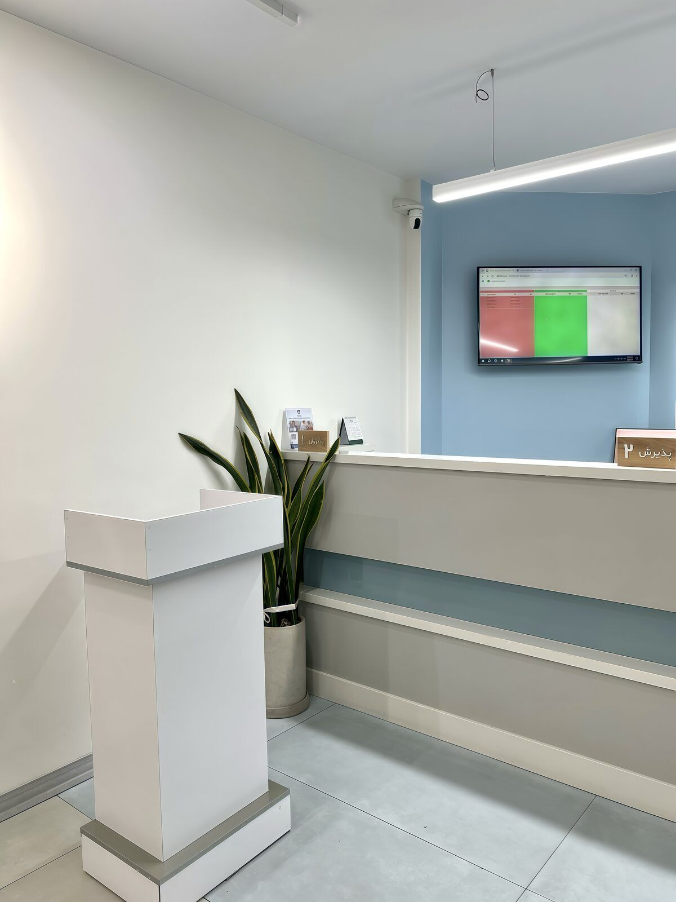

آزمایشگاه تشخیص طبی و تخصصیپیوند
پاتولوژی، ژنتیک پزشکی و مولکولی
- ساعات کاری
- شنبه تا چهارشنبه 06:30 الی 19:00
- پنجشنبه 06:30 الی 18:00
- نشانی
- تهران، خیابان شریعتی، خیابان ظفر، پلاک 174
پاتولوژی، ژنتیک پزشکی و مولکولی
رنگهای ورودی خود آزمایشگاه: دیوار چوبی، نشان فلزی و پرچم سرمهای و فیروزهای. عکسها در یک درگاهی بلند دیده میشوند که روی دیوار چوبی تا کف پایین آمده، مثل دری که به داخل آزمایشگاه باز میشود. سرمهای لوگو زمینه متن است و دکمه کرم «جواب آزمایش»، با نشان فیروزهای در دایره سرمهای، روشنترین چیز صفحه.
#003C7E · #002A5Cزمینه ستون متن و پلاکهای اسلایدر. سفید روی آن ۱۰٫۷۸ و روی سرمهای تیره ۱۴٫۱۳ به ۱.#00C0F3آیکون جواب آزمایش در دایره سرمهای (۵٫۰۵ به ۱)، آیکون تلفن سربرگ و هاله فوکوس.#FBF3E6 · #F6EBDAدکمه جواب آزمایش، روشنترین سطح صفحه روی سرمهای؛ و پلاکهای زیرنویس زیر درگاهی. سرمهای روی آن ۹٫۷۹ و جوهر ۱۳٫۳۵ به ۱.#9C7A57 · #6E5439دیوار پشت درگاهی، از دیوار ورودی (عکس ۵)، با دانه ریز و نوری گرم پشت عکس. فقط سطح؛ متن رویش نمینشیند.#E2C29C · #F1E1C6لبه و متن دکمه نوبتدهی و تلفن، آیکونها و عنوانهای ساعات کاری و نشانی، و لبه کرم درگاهی. روی سرمهای ۶٫۳۸ به ۱.#C9D8EAمتن دوم روی سرمهای. ۷٫۴۴ به ۱.#FFFFFFسربرگ؛ لوگوی سرمهای همیشه روی سفید مینشیند. سرمهای روی آن ۱۰٫۷۸ به ۱.


حالتها برای بازبینی؛ جزو طرح نیست.